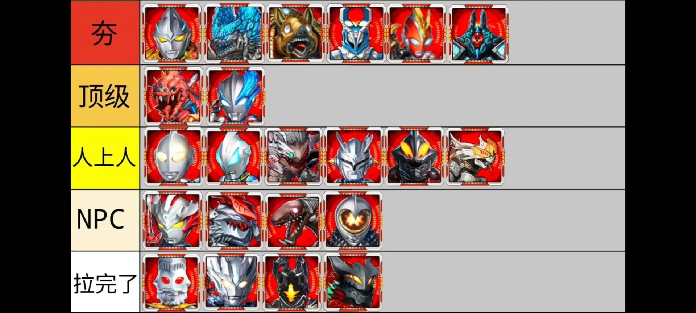

转载自玩家社区 · 内容版权归原作者所有
本页包含图片攻略与视频文字稿，内容版权归原作者所有；点击图片可查看原图，文字稿按 AI 字幕原文分段。

点击图片查看原图
今年3月16日，YX策划做出了一个重大改动
超强角色卡池 也就是老虎机
UL的光能等级限制由五级下降到了一级
这么改的好处是，以前最少要75块钱才能玩的UL卡，现在充个六元礼包就能攒资源抽了，对学生党尤其是初中生特别友好。
那么我就趁着这次机会给小伙伴们盘点一下老虎机UL的抽取建议。
（本盘点不包含秘藏卡、融合卡和红变UL）
奥特之王：作为一张老牌UL卡，奥王不管是机制还是数值完全跟不上现在的版本，并且还有突破奥王的存在，只能给拉完了
泰迦三重斯特利姆形态：曾经的奥阵大C，现在是要坦度有伤害，要伤害打不出，成于二段能量技也败于二段能量技，给到NPC
利捕头（利布特）：他的出现直接击垮了当年泰迦在奥阵的统治，是第一个由二段伤害的地图炮。但是现版本启动太慢，很容易在前几个回合被秒，甚至还有叠层bug，这对打本的影响很大。介于启动后有一些强度，给到人上人
捷德银河初升：本来是奥星顶级挂件炮灰，却在去年加强后修复了良性bug，现在不管是打本还是PVP都被亚克踩头，给到人上人
赛迦：跟奥王同时期的卡，也是吃了出场早的亏，曾经有多风光，现在就有多落魄，给到NPC
布莱泽：高效二段地图炮，高额暴击，能量技跟瓦龙一样的同款加强，续航更加稳定，还能给敌方全体挂封技和燃烧，最重要的是加强了简介技，现在只要吃一次奶就能解锁二命。不过因为强绑奶妈且自身较脆，加强后也依旧是顶级，主要也是作为主C被一个神秘红脸给踩头了。
奥美迦白虎装甲：（请输入文本）配合保镖就能做到拳打诺亚，脚踢雷杰多，现版本奥阵UL最强主C卡，毫无疑问给到夯。
灼日亚刻：直接说优点，启动快，伤害高，坦度高，抽了还有皓月亚刻这个奥阵UL顶级辅助兜底，必须夯
海帕杰顿：奥系第一张UL卡。立绘是帅的，强度是没有的，直接拉完了
加拉特隆MK-2：加强后把能量技从随机三连改成了地图炮，新增的受伤率也大大加强了辅助打本能力，不过特效依旧是南蚌能量棍
+12给了经典的UL加强通用模板，现在白龙的数值也算是一张正常的UL卡了，不过续航依旧是落后的格挡回血。数据化在目前的UL局还是相当有用的，不过会被保镖挡住，最好能先手释放。自身没有二命，伤害也偏低，被动还是更偏向于光环辅助卡，可以做母体的队友，综合可以给到顶级。
宝石兽：奥系第一张机制卡，宝石化属于控制效果，会被新时代BY免疫，不过在UL对局还是很恶心的。并且加强后的宝石兽在加七和加12被动的加持下，有着不俗的伤害，缺点还是自身太脆，吃队友，给到人上人
黑蜧：曾经的赛迦杀手，现在的时代眼泪。跟泰迦一样，是非常自私的主C卡，对全队没有增益所以排不到人上人，再往上的顶级主C卡黑蜧数值又跟不上，给到NPC
机械赛罗：机械阵增伤辅助，主要靠污染之章吃饭，主堆可以打本，但是数值跟不上了，只能给到人上人
乌拉：邪阵的续航救星，第一张UL奶，加强后有稳定的增伤能力，并且加12被动叠起来后也非常的恶心 ，给到顶级
斯菲亚母体：（请输入文本）现版本UL最强超模卡，必须夯
瓦拉隆：能量技从三回合叠满加强到两回合叠满，并且加12被动叠满后，每回合都会生出一个魔丸（生物炸弹·超爆炸），
但是这个魔丸的倍率对比普通能量技，是提高了下限降低了上限，输出变高了，但爆发变低了。，依旧渔村爆料“加强力度最大之人”，依旧反向加强第一龙，降级到NPC
基尔巴格：奥系作为一个Q版卡牌游戏，我一开始还以为YX会把猪头做成，非常可爱的那种，结果等实装后却是这个吊样。不过猪头强度这方面没得说，作为打本辅助可以给到夯
终极贝利亚：曾经一口咬爆了土豆服务器，更多的时间是作为打本黑奴而存在，而如今数值跟不上，打本卡也越来越多，UL兽贝几乎没有存在感了，给到拉完了
雷布朗多星人：以前的贝利亚专辅，加强后放开了限制，可辅助所有角色，这一个附体Buff就超越了其他大部分辅助，死亡时甚至还有高额真伤自爆，毫无疑问给到夯
奇美拉贝洛斯：除了前两个回合能靠无敌盾苟活，整体强度并不高
可以看成是低配版母体，只能给到人上人
苏仪德：从能量技来看，应该是在对标奥阵的皓月亚刻，但是与皓月亚刻的闪避抗暴加成不同，苏仪德给的居然是格挡韧性加强，这就导致他的生存能力远没有皓月亚刻稳定，而且没有二命，相当吃资源还强绑猪，只能给到NPC
特拉菲扎：机械阵专辅，皓月亚刻同款能量技，，瓦隆同款触发技，效果献祭还更强。作为一个副C，伤害倍率给的也相当慷慨。但增伤
被动较少，哪怕对机械阵的打本提升也不如皓月亚刻。但是修二命之后直接给到夯，只凭这个二命效果就足够了。因为庇护不同于无敌，庇护可以阻断除次元卡外的所有效果和伤害，是真正意义上的无敌一回合。特拉菲扎可以看成是乌拉的完全上位，非常推荐平民阵抽取，只要给点资源就能有非常大的作用。